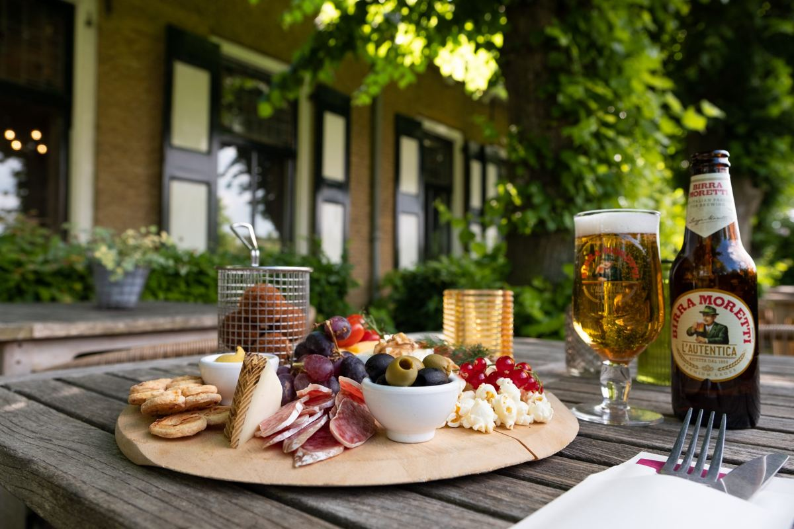
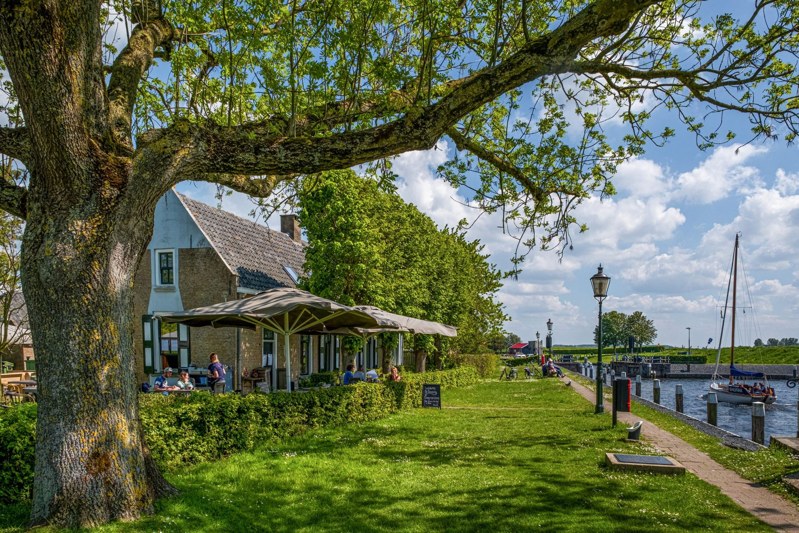
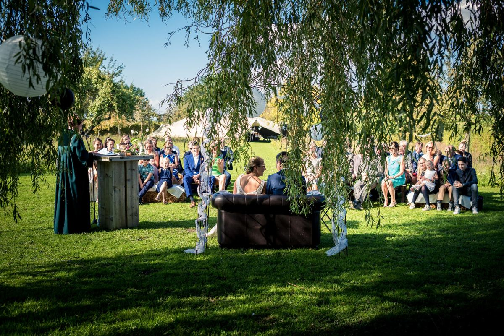
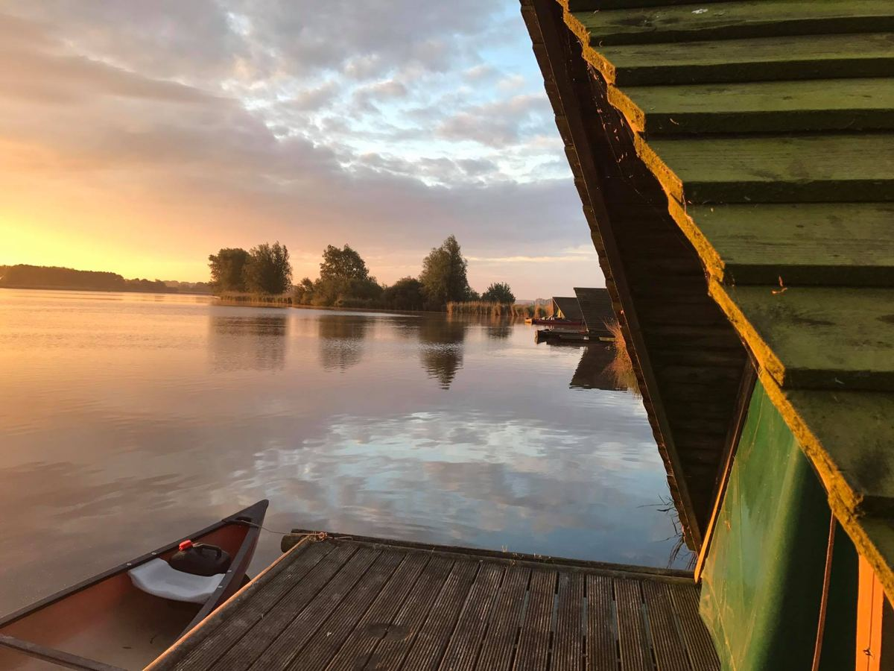
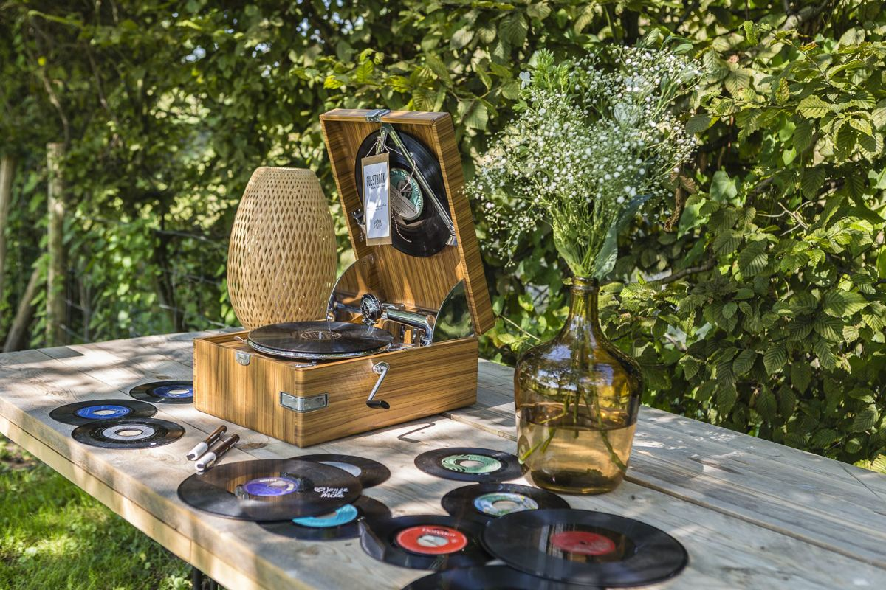
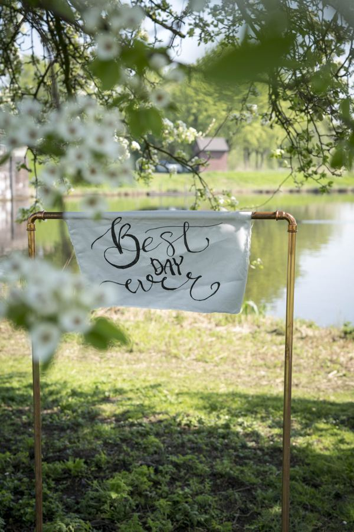
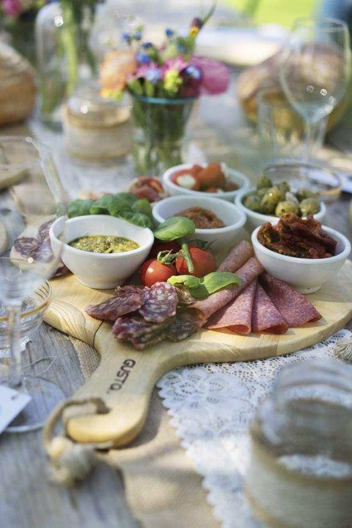
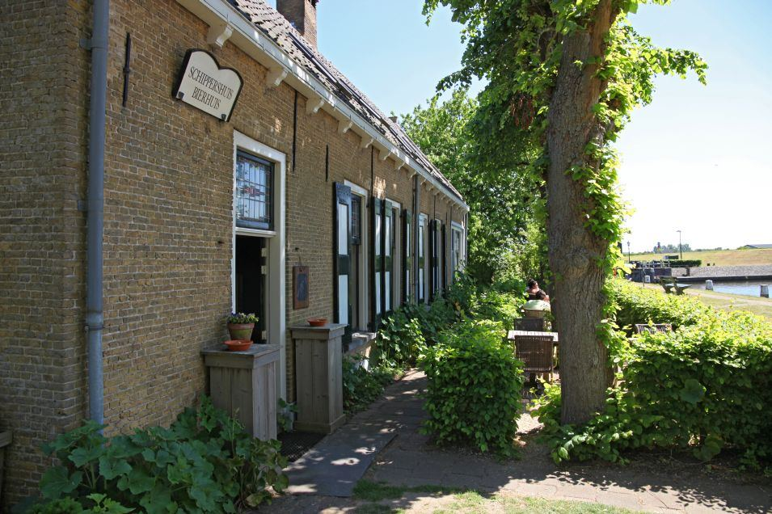

Restaurant
Lunch, huisgemaakte taart en een goed verzorgd diner, binnen in het huiskamercafé of op ons groene terras aan het water.
Lunch & dinerKaart met de seizoenen
Meer info

Restaurant en huiskamercafé in het oude schippershuis bij de monumentale sluis. Kom lunchen op het terras, vier je bruiloft in onze tuin of blijf slapen aan het water.
Dé plek om jullie droombruiloft te vieren, hier klopt alles!Marion, via Toptrouwlocaties · 9,2 uit 66 reviews
Allemaal op hetzelfde bijzondere plekje: het sluiseiland tussen De Heen en Dinteloord, pal aan de Dintelse Gorzen.

Lunch, huisgemaakte taart en een goed verzorgd diner, binnen in het huiskamercafé of op ons groene terras aan het water.

Je ja-woord onder de wilg in onze tuin, of een receptie, verjaardag of familiedag op je eigen eilandje.

Slapen in de monumentale sluiswachterswoning, of op een eigen kampeervlot op de Vliet, alleen per kano te bereiken.



Via het sluisbruggetje steek je samen met je gasten over naar het eiland. Aan de zuidkant ligt onze tuin met fruitbomen, madeliefjes en een grote wilg op de punt: daar geef je je ja-woord, met uitzicht over de Steenbergse Vliet.
Regent het toch? In de tuin staat een stretchtent met heaters. Voor het avondfeest met band of DJ gaan jullie naar de feestzaal van zusterbedrijf Akkermans, op 1,2 kilometer.
We konden alles met 1 contactpersoon regelen; van styling, eten tot de bloemen. De locatie is romantisch en ademt de sfeer van een prachtige tuin.EvaToptrouwlocaties · 9,3
Dé plek om jullie droombruiloft te vieren, hier klopt alles!MarionToptrouwlocaties · 10
Wij hebben op 3 september 2020 onze bruiloft bij Beneden Sas gehouden, in één woord: Top!SvenToptrouwlocaties · 9,4
Fantastische dag gehad,de locatie is wel erg weer afhankelijk, wel hebben ze een mooie tentLisanneToptrouwlocaties · 8,3

Beneden Sas was vroeger een bierhuis waar schippers een borrel dronken terwijl ze op het getij wachtten. In dat karakteristieke pand zit nu ons kleinschalige restaurant, met de sfeer van vroeger in een eigentijds jasje.
We zijn een gemoedelijk familiebedrijf, gerund door de broers Robbert en Jeroen Akkermans. Hun liefde voor dit plekje proef je in de gerechten en zie je terug in de sfeer op het eiland.
Combineer een bezoek aan Beneden Sas met een dagje erop uit. Alles ligt hier om de hoek.
Wandelen in een echt vogelparadijs van Natuurmonumenten, met grote kans op Schotse Hooglanders. Tip: beklim de Bunkertreppe bij de sluis.
Huur een kano, sup board of fluistersloep en verken de rustige Steenbergsche Vliet, met een picknick- of borrelmand erbij.
Fietsen over polderwegen en slingerende dijken, naar Bergen op Zoom, of een e-choppertocht langs het water.
Par 3 golfbaan, Treasure Island Adventure Golf, escape rooms en uitjes voor familie, vrienden en bedrijven.
Kom je varend? Aanmeren kan op loopafstand bij Jachthaven De Vlije of WSV Volkerak.
Binnen is plek voor ongeveer 35 gasten, dus reserveer vooraf. Voor bruiloften, feesten en groepen kun je het hele jaar bij ons terecht, ook in de winter.
Met 10 personen of meer? Neem dan even contact met ons op.
Van 11:00 tot 22:00 uur (vrijdag buiten juli en augustus vanaf 12:00). Met Pasen, Hemelvaart en Pinksteren zijn we altijd extra open.